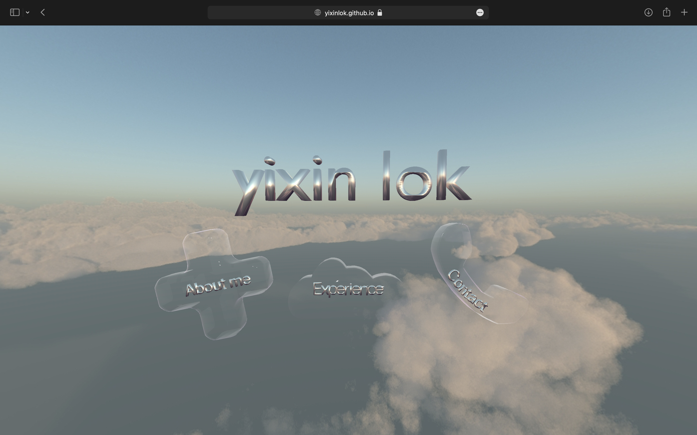
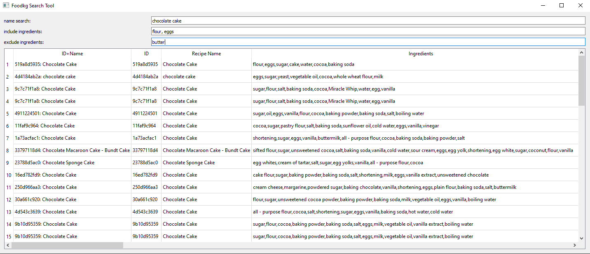
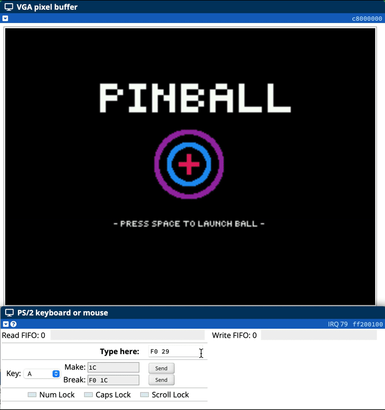
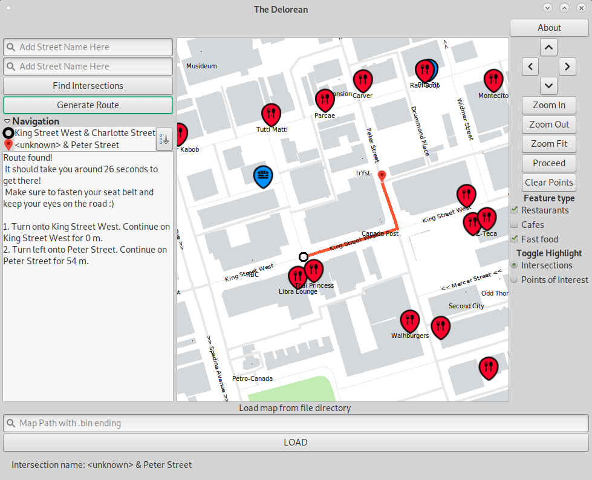

About me
Hi I'm Yixin, and I'm a 3rd year computer engineering undergraduate at the University of Toronto.
I'm highly interested in 3D computer graphics, machine learning, and all intersections of the two fields - such as computer vision and AR/VR.
This summer, I worked as a research intern at the D3M Lab, where we investigated using novel Neural Information Retrieval (Neural IR) techniques (specifically, TAS-B)
to recommend recipes from natural text queries.
In my free time, I like digital and traditional art, playing badminton, and exploring new cities. I'm also currently teaching myself raytracing and Vulkan.
Below are some of the key projects I have worked on:
3D Personal Website (this website!)
Recipe search engine
Pinball Game for DE1-SoC Computers, in C
Restaurant-finding Map Application, in C++
Experience
These are my work experiences over the past few years. To see my projects, see the about me section instead!
Research Intern, D3M Lab (2022)
Research on Neural Information Retrieval (Neural IR) applications for conversational recommender systems to recommend recipes.
- Built an application to efficiently index and search through over 1 million recipes by keywords and ingredients, ranking search results using the BM-25 model. (Python, Whoosh, PyQt5)
- Collaborated with 4 other interns to curate and validate a 500 natural text query dataset.
- Developed a baseline model to use TAS-B (state-of-the-art Neural IR model) to recommend recipes from natural text queries, improving recommendation accuracy by 235% compared to initial techniques. (Python, Pandas, Huggingface)
GEARS Mentor, University of Toronto (2021-2022)
Mentoring program for first year engineering students at University of Toronto.
- Prepared and conducted weekly drop in sessions on Zoom to provide academic help on first year engineering courses.
- Initiated and led sessions at Chestnut Residence, which led to an increase in student attendance by 4 times the initial attendance.
Game Developer, Cloud Club (2021)
Online platformer game where the player fights enemies, collects coins, and buys power-ups for Cloud Club at the University of Toronto.
- Developed the backend of the merchant store in the game. (Javascript, Phaser.js)
- Designed all UI assets for the merchant store. (Pixilart)
Badminton coach, Sekolah Bisa (2018-2020)
- Coached 20 primary school children from the local Indonesian community in badminton weekly.
- Designed a training syllabus for beginners to learn badminton fundamentals.
- Designed all drills and training sets for each training session.
Contact
{
"Phone":"+1 (647) 8195 185",
"Email": "y.lok@mail.utoronto.ca",
"Linkedin": "www.linkedin.com/in/yixin-lok",
"Github": "https://github.com/yixinlok"
}